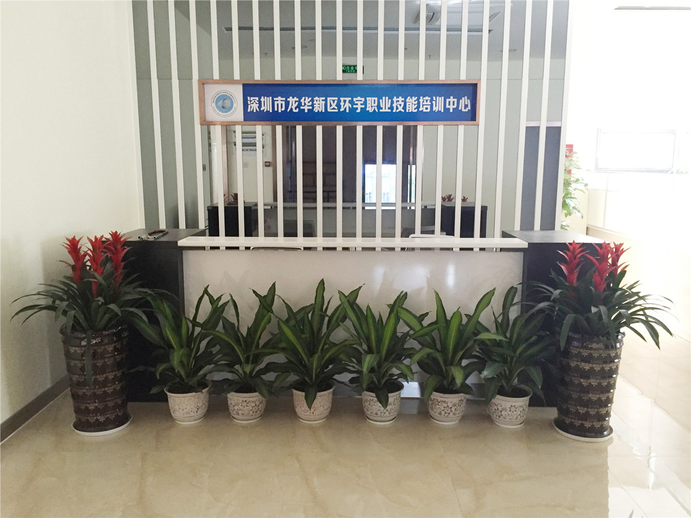

深圳市福田区环宇职业培训中心于2001年正式成立,深圳市龙华新区环宇职业培训中心于2015年正式成立。两家培训中心办公教学面积3000多平米，教学服务团队50多人人，专兼职教师103名，历经几届领导班子努力创办至今，为社会年培训各类人才数量达到15000多人次，培训中心采用线上线下全方位，多层次教学模式，以“用心培育人才，优质服务社会，专业打造品牌，成就人才梦想”的办学理念，用严谨的教学态度建立了一套与市场对接的课程体系和培训模式，配备了具有丰富的理论教学和实操经验的师资队伍，教学设备设施齐全、先进，教学和管理模式创新求实， 秉承不断创新的开拓精神，竭力为社会培养高素质的专业化人才，学校全体教职员工细致、专业的优质服务和各领域师资高水平的教学质量深受学员和企业的高度认可。
成才之路
报名学习
项目培训
技能大赛
创业服务
公司简介

